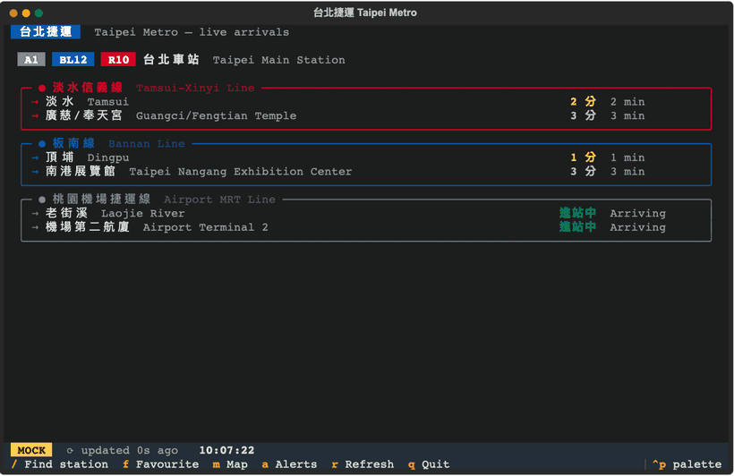

Ruby Wu
I'm currently studying Electrical and Computer Engineering at Cornell University.
I'm currently studying Electrical and Computer Engineering at Cornell University.
In my free time, I love crafting, trying different foods, playing golf, and exploring places. I'm always open to collaborating or talking about exciting ideas. Feel free to reach out!
Software Engineer Intern, Amazon Quick Suite
Full-stack development in React, TypeScript, Java, and Amazon Web Services for enterprise chat workflows.
Research and Development Intern, Advanced RF & Optical Technologies
Built satellite ground control software and first-authored a provisional patent on fiber-optic sensing.
Embedded
Software

A pocket signal emulator inspired by Flipper Zero, built on the FRDM-KL46Z board. Captures and transmits RFID/NFC and infrared signals using a PN532 module and custom IR circuitry. Successfully cloned NFC tags and controlled TVs operating on the 38 kHz band.

Redesigned CUAir's airdrop control board for the 2026 SUAS mission update: dual-payload release, nichrome-wire cut mechanism, servo-controlled sequencing, and abort-safe behavior. Built and validated end-to-end Pixhawk-to-board communication with reliable drop/abort state transitions.

Mouse-drawn paths turned into real-world robot motion via two Pico Ws communicating over UDP. Supports direct-follow and optimized-route modes.

Designed a sensor board that verifies each airdrop step and reports status to the airdrop controller over I2C. Implemented dual-IMU door-state detection, servo potentiometer feedback for pin-removal tracking, and debugged early power integrity issues by reworking grounding for stable operation.
Real-time audio synthesis in C using direct digital synthesis and fixed-point arithmetic under strict timing constraints. Block-based waveform generation with runtime parameter updates to eliminate audible artifacts.

A live Taipei Metro arrival board and network map in the terminal, covering 138 stations across 7 lines with names in Chinese and English. Taipei doesn't publish train positions, so the map infers them from TDX arrival sightings and station-to-station run times, and draws them over a braille-dot map built from real coordinates. A simulation mode runs with no network or API key.
Full-stack control system for precision laser tracking at NASA JPL. Built RESTful APIs, a real-time React dashboard, and BER analysis with NumPy and Pandas.
Designed and validated a fiber-optic sensing system at NASA JPL. Defined evaluation metrics, characterized failure modes, and built a telemetry pipeline for near-real-time analysis. First author on a provisional patent, “Interferometric Fiber-Optic Systems and Methods for Detecting Reflected Acoustic Signals.”
Full-stack ERP features for CUAir: React frontend, FastAPI + SQLite backend, and REST APIs with structured logging.
Take a break and play a quick round!